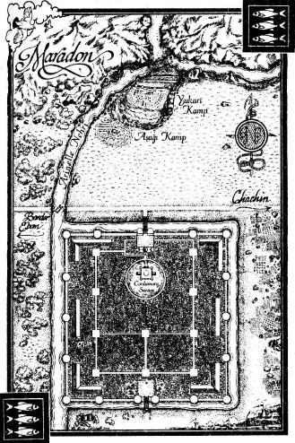

18
-------------------------------------------------------------------------------------------------
BU MEKANIN GÜCÜ
Perrin karanlıkta koşuyordu. Islak sis parçaları yüzüne sürtünüyor, sakalında yoğunlaşıyordu. Zihni puslu ve dalgındı. Nereye gidiyordu? Ne yapıyordu? Neden koşuyordu?
Kükreyerek atıldı, sisli karanlığı yarıp geçti ve açık havaya çıktı. Derin bir nefes aldı ve çimen parçalarıyla kaplı, eteklerinde bir ağaç halkası olan dik bir tepeye indi. Gökyüzü gürlüyor, katran kazanı gibi kaynayan bulutlarla çalkalanıyordu.
Kurt düşündeydi. Vücudu gerçek dünyada, bu tepede, Faile ile birlikte uyuyordu. Derin derin nefes alarak gülümsedi. Sorunları azalmamıştı. Aslında, Beyazpelerinlerin ültimatomundan sonra, daha da artmış görünüyordu. Ama Faile’yle arasında her şey yolundaydı. Bu basit gerçek çok şeyi değiştiriyordu. O yanındayken, her şeyi başarabilirdi.
Tepeden aşağı atladı ve ordusunun kamp kurduğu açık alanı geçti. Burada, kampın kurt düşünde görünmesine yetecek kadar zaman geçirmişlerdi. Çadırlar uyanık dünyayı yansıtıyordu, ama her baktığında kapakları farklı pozisyonda oluyordu. Ateş çukurları, araba tekerleklerinin açtığı oyuklar, atıklar ve bir kenara bırakılmış aletler. Hepsi bir görünüyor, bir kayboluyordu.
Perrin her adımda on adımlık mesafe aşarak kamptan hızla geçti. Eskiden olsa, kampta insanların görünmemesini huzursuz edici bulurdu, ama artık kurt düşüne alışmıştı. Bu doğaldı.
Perrin kampın yanındaki heykele ulaştı, sonra başını kaldırıp siyah, turuncu ve yeşil likenlerle kaplı, eskilikten delik deşik hale gelmiş taşa baktı. Bu şekilde düşmüşse, heykel tuhaf bir pozda olmalıydı. Neredeyse, bu şekilde yapılmış görünüyordu topraktan çıkan devasa bir kol.
Perrin güneydoğuya, Beyazpelerin kampının olduğu yöne döndü. Onlarla başa çıkması gerekiyordu. Geçmişinden kalan bu gölgeyle yüzleşmeden yoluna devam edemeyeceğinden gittikçe daha çok emin oluyordu.
Onlarla başa çıkmanın tek kesin yolu vardı. Asha’maları ve Bilgeleri kullanarak dikkatli bir tuzak kurarsa, Işığın Evlatlarına onları paramparça edecek bir darbe indirebilirdi. Hatta onları bir grup olarak tamamen dağıtabilirdi.
Elinde fırsat, motivasyon ve yöntem vardı. Uluslara korku salmalarına, göstermelik Beyazpelerin mahkemelerine son verebilirdi. Sıçradı, on metre uçtu ve hafifçe yere kondu. Sonra yolda, güneydoğuya doğru koşmaya başladı.
Beyazpelerin kampını ağaçlarla çevrili bir çukurda buldu. Sıkışık halkalar halinde dizilmiş binlerce beyaz çadır. Yaklaşık on bin Işığın Evladını, on bin paralı askeri ve başka askerleri barındıran çadırlar. Balwer kalan Evlatların büyük kısmının burada olduğunu tahmin ediyordu, ama bilgiyi nereden edindiğini açıklamamıştı. Perrin, tozlu adamın Beyazpelerinlere duyduğu nefretin sağduyusunu puslandırmadığını umuyordu.
Perrin çadırların arasında dolaştı ve Elyas ile Aiellerin göremediği bir şey keşfedip edemeyeceğine baktı. Pek olası değildi, ama hazır buradayken, bir denemeye değer diye düşünüyordu. Dahası, mekanı kendi gözleriyle görmek istiyordu. Çadır kapaklarını kaldırdı, çadır grupları arasında dolaştı, mekanı inceledi, gözlemledi, sakinleri hakkında bilgi edinmeye çalıştı. Kamp çok düzenli bir biçimde kurulmuştu. Çadır içleri çadırların kendisinden daha değişkendi, ama gördüğü her şeyin düzenli tutulduğu belliydi.
Beyazpelerinler her şeyin düzgün, düzenli ve dikkatle katlanmış olmasını istiyordu. Ve tüm dünya da aynı şekilde temizlenip ovulabilirmiş, insanlar bir iki sözcükle tanımlanıp açıklanabilirmiş gibi davranmaktan hoşlanıyorlardı.
Perrin başını iki yana salladı ve Lord Kumandan’ın çadırına yollandı. Çadırların düzeni ona yol gösterdi; aradığı çadır merkezdeki halkadaydı. Diğer çadırlardan pek de büyük değildi. Perrin eğilerek içeri girdi ve işe yarayan bir şeyler bulmaya çalıştı. Çadır basit döşenmişti, her baktığında yeri değişen, rulo yapılmış bir şilte ve üzerindeki eşyalar gelişigüzel belirip kaybolan bir masa vardı.
Perrin masaya yaklaştı ve orada beliren bir şeyi eline aldı. Bir mühür yüzüğü. Kanatlı hançer biçimindeki armayı hatırlamıyordu, ama kurt düşünde fazla kalmayacak kadar geçici olan yüzük parmaklarından kaybolmadan önce ezberledi. Beyazpelerinlerin önderiyle görüşmüş ve mektuplaşmış olmasına rağmen, adamın geçmişi hakkında fazla bilgisi yoktu. Belki bu işe yarardı.
Çadırı bir süre daha aradı, ama faydalı bir şey bulamadı. Sonra, Gaul’un tutsakların büyük kısmının tutulduğunu söylediği büyük çadıra gitti. Burada, Gill Efendi’nin şapkasının bir anlığına belirip kaybolduğunu gördü.
Tatmin olan Perrin çadırdan çıktı. Bunu yaparken, bir şeyin onu rahatsız ettiğini hissetti. Faile kaçırıldığında da bunu denemesi gerekmez miydi? Malden’e keşif için pek çok adam yollamıştı. Işık, Faile’yi bulmak için şehre dalmaktan kendini zor almıştı! Ama mekanı kurt düşünde ziyaret etmek hiç aklına gelmemişti.
Belki de işe yaramazdı. Ama olasılık aklına gelmemişti ve bu onu rahatsız ediyordu.
Beyazpelerin çadırlarından birinin dışına bırakılmış arabanın yanından geçerken donakaldı. Arabanın arkası açıktı ve gümüş rengi, yaşlı bir kurt orada uzanmış, onu izliyordu.
“Dikkatim fazla dağılıyor Çekirge,” dedi Perrin. “Bir hedefe odaklandığımda dikkatsizleşiyorum. Bu tehlikeli olabilir. Savaşta, önündeki düşmana odaklanırken yandaki okçuyu görememek gibi.”
Çekirge ağzını açtı ve kurtların yaptığı gibi gülümsedi. Arabadan aşağı atladı. Perrin yakındaki diğer kurtları sezebiliyordu; daha önce de birlikte koştuğu sürü. Meşe Dansçısı, Kıvılcım ve Sınırsız.
“Tamam,” dedi Çekirge’ye. “Öğrenmeye hazırım.”
Çekirge poposu üzerine oturdu ve Perrin’e baktı. İzle, dedi.
Sonra kayboldu.
Perrin bir küfür sallayarak çevresine bakındı. Kurt nereye gitmişti? Kampta gezinerek aradı, ama Çekirge’yi hiçbir yerde sezemedi. Zihniyle uzandı, ama hiçbir şey bulamadı.
Genç Boğa. Çekirge aniden arkasında belirdi. İzle. Yine ortadan kayboldu.
Perrin hırladı ve sonra hızla kampta dolaştı. Kurdu bulamayınca, Çekirge’yle son karşılaştığı tahıl tarlasına gitti. Kurt orada değildi. Perrin sıkıntı içinde dalgalanan tahılların arasında dikildi.
Birkaç dakika sonra Çekirge onu buldu. Kurt tatmin olmamış kokuyordu. İzle! dedi.
“Nasıl izleyebileceğimi bilmiyorum,” dedi Perrin. “Çekirge, nereye gittiğini bilmiyorum.”
Kurt oturdu. Sürünün geri kalanına katılan bir kurt eniği imgesi yolladı. Enik büyüklerini izliyor, onların yaptıklarını yapıyordu.
“Ben kurt değilim, Çekirge,” dedi Perrin. “Sizin öğrendiğiniz gibi öğrenemem. Ne yapmamı istediğini bana açıklamalısın.”
Buraya gel. Kurt, tuhaf bir biçimde, Emond Meydanı’nın imgesini yolladı. Sonra yok oldu.
Perrin onu takip ederek, tanıdık bir çayırda belirdi. Çayırın kenarına binalar dizilmişti, ki bu Perrin’e yanlış geliyordu. Emond Meydanı küçük bir köy olmalıydı, belediye başkanının hanının önünde parke döşeli yolu olan, taş duvarlı bir kasaba değil.
“Neden buraya geldik?” diye sordu. Rahatsız edici bir biçimde, kurt başı bayrağı çayırdaki direkte hala dalgalanıyordu. Kurt düşünün numarası olabilirdi, ama Perrin bundan kuşkuluydu. İki Nehirlilerin “Perrin Altıngöz’ün” bayrağını ne kadar hevesle açtıklarını çok iyi biliyordu.
İnsanlar tuhaf, dedi Çekirge.
Perrin yaşlı kurda döndü.
İnsanlar tuhaf düşünceler düşünüyor, dedi Çekirge. Biz onları anlamaya çalışmayız. Bir geyik neden kaçar, bir serçe neden uçar, ağaçlar neden büyür? öyle işte. Hepsi bu.
“Pekala,” dedi Perrin.
Bir serçeye avlanmayı öğretemem, diye devam etti Çekirge. Bir serçe de bir kurda uçmayı öğretemez.
“Ama burada uçabiliyorsun,” dedi Perrin.
Evet. Ve bana öğreten olmadı. Zaten biliyordum. Çekirge’nin kokusunda duygusallık ve kargaşa vardı. Türlerinden birinin öğrendiği bir şeyi tüm kurtlar bilirdi. Çekirge sıkkındı, çünkü Perrin’e öğretmek istiyordu, ama bir şeyi insanların yaptığı şekilde yapmaya alışık değildi.
“Lütfen,” dedi Perrin. “Ne demek istediğini açıklamaya çalış. Bana her zaman ‘fazla kuvvetli’ bir biçimde burada olduğumu söylersin. Tehlikeli diyorsun. Neden?”
Uyuyorsun, dedi Çekirge. Diğer sen. Burada fazla uzun kalamazsın. Buradaki varlığının doğal olmadığını her zaman hatırlamalısın. Burası senin inin değil.
Çekirge çevrelerindeki evlere döndü. Senin inin, babanın ini burası. Bu mekan. Burayı hatırla. Kaybolmanı engelleyecek. Türün eskiden öyle yapıyordu. Anla.
Bu bir sır değildi, ama yakarıya benziyordu. Çekirge, başka nasıl açıklayacağını bilmiyordu.
“Deneyebilirim,” diye düşündü Perrin, kurdun mesajını olabildiğince yorumlamaya çalışarak. Ama Çekirge yanılıyordu. Bu mekan onun yuvası değildi. Perrin’in yuvası Faile’ydi. Kurt düşüne daha fazla çekilmemek için, bir şekilde bunu hatırlaması gerekiyordu.
Dişini zihninde gördüm, Genç Boğa, dedi Çekirge, başını kaldırarak. Arı kovanı gibi, tatlı bal ve sivri iğnelerle dolu. Çekirge’nin Faile hakkında gönderdiği imge, çok kafa karıştırıcı bir dişi kurt hakkındaydı. Bir an oyuncu oyuncu burnunu dişleyen, bir sonrakinde ona hırlayan ve etini paylaşmayı reddeden bir kurt.
Perrin gülümsedi.
Anı bir parçası, dedi Çekirge. Ama diğer parça da sensin. Genç Boğa olarak kalmalısın. Suda ışıldayan, üzerinden dalgalar geçtikçe belirsizleşen bir kurt yansıması.
“Anlamıyorum.”
Bu mekanın gücü, dedi Çekirge, taştan oyulmuş bir kurt imgesiyle, senin gücündür. Kurt bir an düşündü. Dikil. Kal. Sen ol.
Sonra kalktı ve Perrin’in üzerine atılmaya hazırlanırmış gibi geriledi.
Kafası karışan Perrin kendini olduğu haliyle gözlerinin önüne getirdi ve bu imgeyi kafasında becerebildiğince sıkı tuttu.
Çekirge koşarak geldi ve üzerine atladı, vücudunu Perrin’inkine çarptı. Bunu daha önce de yapmış, bir şekilde Perrin’i kurt düşünden dışarı itmişti.
Ama bu sefer Perrin hazırdı ve bekliyordu. İçgüdüyle onu itti. Kurt düşü çevresinde dalgalandı, ama sonra yine katılaştı. Çekirge’nin ağırlığı Perrin’i yere devirmeliydi, ama kurt onun üzerinden sekti.
Çekirge, sersemlemiş gibi, başını iki yana salladı. Güzel, dedi memnuniyetle. Güzel. Öğreniyorsun. Yine.
Çekirge ikinci defa ona çarpmadan önce, Perrin tam zamanında hazırladı kendini. Hırladı, ama yerinde kaldı.
Buraya, dedi Çekirge, bir tahıl tarlası imgesi yollayarak. Ortadan kayboldu ve Perrin takip etti. Tarlada belirir belirmez, kurt zihni ve vücuduyla ona çarptı.
Perrin bu sefer yere düştü, her şey dalgalandı ve ışıldadı. İtildiğini, kurt düşünden atılıp sıradan düşlere daldığını hissetti.
Hayır! diye düşündü, tahıl tarlasında diz çökmüş halini gözlerinin önüne getirerek. Oradaydı. Katı, gerçek bir biçimde hayal etti. Yulafların kokusunu, toprak ve dökülmüş yaprak kokularıyla canlanmış rutubetli havayı kokladı.
Manzara oluştu. Perrin nefes nefese diz çökmüştü, ama hala kurt düşündeydi.
Güzel, dedi Çekirge. Hızlı öğreniyorsun.
“Başka seçenek yok,” dedi Perrin ayağa kalkarak.
Son Av yaklaşıyor, diye onayladı Çekirge, Beyazpelerin kampının imgesini yollayarak.
Perrin kendini hazırlayarak oraya gitti. Saldırı gelmedi. Çevresine bakınarak kurdu aradı.
Bir şey zihnine çarptı. Hareket yoktu, yalnızca zihinsel saldırı. Önceki kadar kuvvetli değildi, ama beklenmedikti. Perrin onu zorla savuşturabildi.
Çekirge havadan düştü ve zarafetle yere indi. Her zaman hazır ol, dedi. Ama özellikle de yer değiştirirken. Açık çayıra çıkmadan önce havayı koklayan bir kurt imgesi.
“Anlıyorum.”
Ama fazla kuvvetle gelme, diye payladı Çekirge.
Perrin kendini Faile’yi ve birlikte uyudukları yeri hatırlamaya zorladı. Yuvası. O... hafifçe soldu. Derisi saydamlaşmadı ve kurt düşü aynı kaldı, ama daha açıkta hissetti.
Güzel, dedi Çekirge. Her zaman hazır ol, ama asla fazla kuvvetle tutunma. Çenelerinde enik taşımak gibi.
“Bu koruması kolay bir denge olmayacak,” dedi Perrin.
Çekirge hafifçe şaşkın bir koku yolladı. Elbette zor olacaktı.
Perrin gülümsedi. “Şimdi ne var?”
Koşmak, dedi Çekirge. Sonra daha fazla çalışma.
Kurt koşarak uzaklaştı, gri-gümüş bir bulanıklık halinde yola doğru süzüldü. Perrin de onu takip etti. Çekirge’nin kararlılığını seziyordu -mültecilere savaşmayı öğretirken Tam’in yaydığı kokuya tuhaf bir biçimde benziyordu kokusu. Bu Perrin’i gülümsetti.
Yolda koştular ve Perrin düşe fazla kuvvetli girmemeyi, ama aynı zamanda benlik hissini katılaştırmaya hazır olmayı çalıştı. Çekirge zaman zaman ona saldırıyor, onu kurt düşünden atmaya çalışıyordu. Çekirge -aniden- durana kadar koştular.
Perrin birkaç adım daha atarak kurdun önüne geçti ve sonra durdu. Önlerinde bir şey vardı. Yolu kesen saydam, mor bir duvar. Sağa, sola ve gökyüzüne uzanıyordu ve sınırları görünmüyordu.
“Çekirge?” diye sordu Perrin. “Bu ne?”
Yanlışlık, dedi Çekirge. Burada olmaması gerek. Kurt öfkeli kokuyordu.
Perrin öne adım attı ve elini yüzeye yaklaştırdı, ama duraksadı. Cama benziyordu. Kurt düşünde daha önce hiç böyle bir şey görmemişti. Şer kabarcıkları gibi olabilir miydi? Başını kaldırıp gökyüzüne baktı.
Duvar aniden çaktı ve yok oldu. Perrin gözlerini kırpıştırarak geriledi. Çekirge’ye baktı. Kurt poposu üzerine oturmuş, biraz önce duvarın olduğu yere bakıyordu. Gel. Genç Boğa, dedi kurt sonunda, ayağa kalkarak. Başka yerde çalışalım.
Koşarak uzaklaştı. Perrin yola baktı. Duvar her ne ise, gözle görülür bir iz bırakmamıştı.
Huzursuz olan Perrin, Çekirge’yi izledi.
“Yak beni, o okçular nerede?” Rodel Ituralde tepeye tırmandı. “Onların bir saat önce, arbaletçilerin yerini almak üzere ön kulelerde saf tutmalarını istemiştim!”
Önünde, savaştan tangırtılar, çığlıklar, homurtular, gümbürtüler ve kükremeler yükseliyordu. Bir Trolloc grubu, kütükten yapılmış kaba yüzer köprüler ve sallarla ırmağı aşmıştı. Trolloclar sudan geçmekten nefret ederdi. Onları sudan geçmeye ikna etmek zordu.
Bu yüzden bu tahkimat o kadar işe yaramıştı. Yamaç doğrudan, engin arazideki tek geçide iniyordu. Kuzeyde Trolloclar, Afet sınırındaki bir geçitten dışarı taşıyor, doğrudan Arinelle Irmağı’na dalıyorlardı. Irmağı geçmeye zorlandıklarında da, hendekler kazılmış, istihkam duvarlarıyla desteklenmiş, tepelerine okçular yerleştirilmiş, kuleler serpiştirilmiş yamaca tosluyorlardı. Bu tepeden geçmeden Afet’ten Maradon’a gitmek imkansızdı.

Çok daha büyük bir gücün yolunu kesmek için bile ideal bir konumdu, ama en iyi tahkimatlar bile ele geçirilebilirdi, özellikle de adamlarınız haftalar süren savaş yüzünden bitap düşmüşse. Trolloclar ırmağı aşmış, bir ok yağmuru altında savaşa savaşa yamaca tırmanmış, hendeklere düşmüş, yüksek istihkam duvarlarını aşmakta güçlük çekmişti.
Yamacın tepesindeki arazi düzdü ve Ituralde kumanda merkezini buraya, yukarı kampa kurmuştu. Birbirine girmiş hendeklere, duvarlara ve kulelere bakarak emirler yağdırıyordu. Trolloclar, duvarlardan birinin arkasındaki kargılı askerler tarafından biçiliyordu. Ituralde son Trolloc -devasa, koç suratlı bir yaratıktı- karnında üç kargıyla kükreyerek ölene kadar izledi.
Yeni bir dalga daha geliyor gibiydi, Myrddraaller yeni bir Trolloc kitlesini geçide sürüyorlardı. Irmak cesetlerle tıkanmıştı, su kırmızı akıyordu ve leşler arkadan gelenler için köprü görevi görüyordu.
“Okçular!” diye bağırdı Ituralde. “Nerede o lanet...”
Bir okçu birliği koşarak geçti. Geride tuttuğu yedekler. Çoğu, Domanlıların bakır tenine sahipti, ama araya birkaç Tarabonlu da karışmıştı. Çeşit çeşit oklar taşıyorlardı: dar, uzun Doman yayları, nöbetçi noktalarından ya da köylerden toplanmış, yılankavi kısa Saldaea yayları, hatta birkaç uzun İki Nehir yayı.
“Lidrin,” diye seslendi Ituralde. Sert ifadeli genç subay tepede ona doğru seyirtti. Lidrin’in kahverengi üniforması kırışmış, diz hizasında kirlenmişti, ama adam disiplinsiz olduğu için değil, askerleri çamaşırlarından daha fazla ilgiye ihtiyaç duyduğu için.
“Okçularla birlikte kulelere git,” dedi Ituralde. “Bu Trolloclar yeniden saldırmayı deneyecek. Bir yumruğun daha kuleye çıkmasını istemiyorum, duydun mu? Konumumuzu ele geçirip bize karşı kullanırlarsa, sabahım korkunç geçer.”
Eskiden olsa bu yorum Lidrin’i gülümsetirdi, ama şimdi değil. Adam artık pek gülümsemiyordu; yalnızca Trolloc öldürdüğünde. Selam verdi ve dönüp okçuların peşinden koştu.
Ituralde dönüp tepenin arka tarafına baktı. Aşağı kamp oraya, dik yamacın gölgesine kurulmuştu. Burası eskiden doğal bir tepeydi, ama seneler içinde Saldaealılar üzerine kendi yapılarını eklemişti, bir uzun yamaç ırmağa uzanıyordu ve karşı yanda daha dik bir yamaç vardı. Aşağı kampta, birlikleri yemek yeyip uyuyabiliyordu ve erzak stoku korunabiliyordu. Ituralde’nin üzerinde durduğu dik tepe, mekanı düşman oklarından koruyordu.
Aşağı ve yukarı kamplar, yamalı yorgan gibi görünüyordu. Bazı çadırlar Saldaea köylerinden satın alınmıştı, bazıları Daman işiydi ve düzinelercesi Kapıyollar aracılığıyla diyarın dört bir yanından getirilmişti. Çoğu devasa, çizgili Cairhien çadırlarıydı. Adamları yağmurdan koruyordu ve bu yeterliydi.
Saldaealılar tahkimat yapmayı kesinlikle biliyorlardı. Bir de Ituralde onları Maradon şehrinde saklanmayı bırakıp yardıma gelmeye ikna edebilse...
“Şimdi,” dedi Ituralde, “nerede bu lanet...”
Bir şey gökyüzünü karartınca sustu. Yukarıdan koca koca nesneler yağmaya başlayınca, bir küfür sallayıp eğilmeye ancak zaman bulabildi. Yağan şeyler yay çizerek yukarı kampa düştü, şaşkın, acılı bağırışların yükselmesine sebep oldu. Bunlar kaya değildi: cesettiler. Ölü Trollocların dev leşleri. Gölgedölü ordusu sonunda mancınıklarını kurmayı başarmıştı.
Ituralde’nin bir parçası, onları buna zorladığı için gurur duyuyordu. Kuşatma makineleri kuşkusuz biraz daha güneyde olan Maradon’a saldırmak için getirilmişti. Mancınıkları Ituralde’nin güçlerine saldırmak için geçidin karşısına kurmak Gölgedöllerini yavaşlatmakla kalmayacak, mancınıklarını karşı ateş tehlikesi ile karşı karşıya bırakacaktı.
Onların leş fırlatmalarını beklememişti. Gökyüzü yine kararır, yeni leşler düşer, çadırları yıkar, askerlerini ezerken Ituralde küfretti.
“Şifacılar!” diye bağırdı. “O Asha’manlar nerede?” Bu kuşatma başladığından beri Asha’manları çok çalıştırmıştı. Bitkin düşürecek kadar. Şimdi onları geri çekmişti ve yalnızca Trolloc saldırıları yukarı kampa fazla yaklaştığında kullanıyordu.
“Efendim!” Tırnakları kirli genç bir ulak ön saflardan yukarı tırmandı. Domanlı yüzü bembeyaz kesilmişti ve daha doğru düzgün bir bıyık uzatamayacak kadar gençti. “Yüzbaşı Finsas, Gölgedölü ordusunun mancınıkları menzil içine naklettiğini raporluyor. On altı tane saymış.”
“Yüzbaşı Finsas’a söyle, kahrolası zamanlaması daha iyi olabilirdi,” diye hırladı Ituralde.
“Özür dilerim, Lordum. Biz neler olduğunu anlayamadan mancınıkları geçitten geçirdiler. İlk salvo konuşlandığımız yeri vurdu. Lord Finsas da yaralandı.”
Ituralde başını salladı; Rajabi yukarı kampın kumandasını almaya ve yaralıları organize etmeye geliyordu. Bir sürü leş, aşağı kampı da vurmuştu. Mancınıklar tepeyi aşmaya yetecek kadar yükseğe ve uzağa fırlatabiliyordu, bu yüzden önceden korunaklı yerde saydığı adamların üzerine de leş yağabilirdi. Aşağı kampı geriye, ovaya, Maradon yakınına çekmesi gerekecekti ve bu da karşı saldırı süresini geciktirecekti. Kanlı küller.
Eskiden bu kadar çok küfretmezdim, diye düşündü Ituralde. O oğlan yüzündendi, Yeniden Doğan Ejder. Rand al’Thor Ituralde’ye, bazıları açık açık söylenmiş, bazıları ima edilmiş sözler vermişti. Arad Doman’ı Seanchanlardan koruma sözü. Ituralde’nin Seanchanların tuzağında ölmek yerine yaşayacağına dair sözler. Ona yapacak bir iş, önemli bir iş, yaşamsal bir iş verme sözü. İmkansız bir iş.
Gölge’yi durdur. Yardım gelene kadar savaş.
Gökyüzü yine karardı ve Ituralde kumanda çadırına girdi. Kuşatma silahlarına karşı önlem niyetine, tahtadan bir çatısı vardı. O taş yağmurundan korkuyordu, ama leşlerden değil. Adamlar yaralıları aşağı kampın göreceli güvenliğine ve oradan da ova üzerinden Maradon’a götürmek üzere dağıldılar. Çalışmalara Rajabi önderlik ediyordu. İri yarı adamın boynu on yıllık bir dişbudak kadar kalındı ve kolları daha da kalındı. Savaşta sol dizinden yaralanmıştı ve bacağı dizinin altından kesilmişti, bu yüzden artık aksayarak yürüyordu. Aes Sedailer ona mümkün olduğunca Şifa vermişlerdi ve kesik bacağına bir tahta parçası takılmıştı. Kötü yaralananlarla birlikte, Kapıyollar aracılığıyla gitmeyi reddetmişti ve Ituralde de onu gitmeye zorlamamıştı. Tek bir yara yüzünden iyi bir subaydan vazgeçmezdiniz.
Şişmiş bir leş tentenin tavanına çarptığında genç bir subay irkildi. Subay -Zhell- Domanlıların bakır tenine sahip değildi, ama Doman bıyığı uzatmıştı ve yanağında ok biçiminde bir güzellik işareti vardı.
Trollocları daha fazla tutamazlardı, meydana sürdükleri bunca Trollocla olmazdı. Ituralde adım adım Saldaea içlerine, Arad Doman’a doğru geri çekilmek zorunda kalacaktı. Her zaman kendi memleketine doğru geri çekilmesi tuhaftı. İlk önce güneyden, şimdi de kuzeybatıdan.
Arad Doman Seanchanlar ile Trolloclar arasında ezilecekti. Sözünü tutsan iyi olacak, evlat.
Ne yazık ki, Maradon’a çekilemezdi. Oradaki Saldaealılar Ituralde’yi -ve Yeniden Doğan Ejder’i- istilacı olarak gördüklerini açıkça belli etmişlerdi. Kahrolası aptallar. En azından o kuşatma makinelerini yok etme şansı vardı.
Kumanda çadırının tepesine bir leş daha düştü, ama çatı dayandı. Pis kokuya ve bazı durumlarda şapırtılara bakılırsa, bu saldırı için yeni ölmüş Trolloclar seçilmemişti. Subaylarının görevlerinin başında olduğundan emin olan Ituralde -işlerine karışma zamanı değildi- ellerini arkasında kavuşturdu. Çadırın içindeki ve dışındaki askerler onu görünce sırtlarını dikleştirdiler. En iyi planlar bile ancak ilk ok düşene kadar sürerdi, ama kararlı, direngen bir kumandan sırf duruşuyla bile kargaşaya düzen getirebilirdi.
Yukarıda, fırtına kaynıyor, siyah-gümüş bulutlar bir ateşin üzerindeki kararmış kazan gibi asılı duruyordu ve kabuklaşmış kurumun kenarlarında çelik rengi parıltılar görünüyordu. Bu doğal değildi. Ituralde, üstlerine leş yağarken bile korkuya kapılmadığını adamlarının görmesini istiyordu.
Yaralılar alınıp götürüldü ve aşağı kamptaki adamlar kampı daha geriye taşımak üzere bozmaya başladılar. Okçular ve arbaletçiler hala Trolloclara ok yağdırıyordu ve kargılı askerler istihkam duvarlarının arkasında hazır bekliyordu. Ituralde’nin büyükçe bir süvari alayı da vardı, ama onları burada kullanamazdı.
O mancınıkların ateşe devam etmesine izin verirse, fırlattığı kayalar ve saçmalarla adamlarını yıpratırdı, ama Ituralde buna izin vermeden yaktıracaktı onları, Kapıyol kullanarak bir Asha’man ya da alevli oklarla saldıracak bir birlik yollayacaktı.
Keşke Maradon’a çekilebilsem. Ama oradaki Saldaealı lord onu şehrine almazdı; Ituralde şehre doğru çekilirse, o duvarlarla Trolloclar arasında ezilirdi.
Lanet, lanet aptallar. Bir Gölgedölü ordusu kapılarını çalarken ne tür bir ahmak insanların sığınmasına izin vermezdi?
“Hasar raporu istiyorum,” dedi Ituralde Teğmen Nils’e. “Okçuları hazırla. O kuşatma makinelerine saldıracağız. Görev başındaki Asha’manlardan ikisini de getir. Yüzbaşı Creedin’e söyle, geçitteki Trolloc saldırısını izlesin. Bu yaylımın ardından, bizim kargaşaya kapıldığımızı varsayarak çabalarını iki katına çıkaracaklardır.”
Genç adam başını salladı ve telaşla uzaklaştı. Rajabi aksayarak çadıra girdi ve geniş çenesini ovaladı. “O mancınıkları doğru tahmin ettiniz. Gerçekten de bize saldırmak için kurmuşlar.”
“Ben her zaman doğru tahmin etmeye çalışırım,” dedi Ituralde. “Doğru tahmin etmezsem, kaybederiz.”
Rajabi homurdandı. Yukarıda, fırtına kaynıyordu. Uzakta, Ituralde Trollocların bağırtılarını duyabiliyordu. Savaş davulları çalınıyordu. İnsanlar bağırıyordu.
“Yanlış bir şey var,” dedi Ituralde.
“Bu lanet savaşın tamamı yanlış,” dedi Rajabi. “Burada olmamamız gerek; burayı Saldaealıların tutması gerekirdi. Lord Ejder’in bize verdiği bir avuç Saldaea süvarisi değil, tüm orduları.”
“Daha da ötesi,” dedi Ituralde, gökyüzünü tarayarak, “neden leş atıyorlar, Rajabi?”
“Moralimizi bozmak için.”
Duyulmamış bir taktik değildi. Ama ilk yaylımlar? Neden daha fazla hasar verecek şekilde kaya fırlatıp, sürpriz saldırının etkisi geçtiğinde leş fırlatmaya başlamamışlardı? Trolloclar taktikten anlamazdı, ama Soluklar... onlar kurnaz olabilirdi. Ituralde bunu ilk elden öğrenmişti.
Ituralde gökyüzüne bakarken, karanlık bulutlardan doğmuş gibi, yeni bir yaylım başladı. Işık, o kadar çok mancınığı nereden bulmuşlardı? Yüzlerce leş fırlatmaya yetecek kadar mancınıkları vardı.
On altı tane saydı, demişti oğlan. Yeterli değil. O leşlerin bazıları fazla mı düzgünce düşüyordu?
Gerçek, donmuş yağmur gibi suratına çarptı. Kahrolası akıllı canavarlar!
“Okçular!” diye bağırdı Ituralde. “Okçular, havayı gözleyin! Bunlar leş değil!”
Çok geçti. O bağırırken Draghkarlar kanatlarını açtı; bu yaylımdaki “leşlerin” yarıdan fazlası, leşlerin arasına saklanmış canlı Gölgedölleriydi. Birkaç gün önceki ilk Draghkar saldırısından sonra, okçuları vardiyalar halinde gece gündüz gökyüzünü izlemekle görevlendirmişti.
Ama okçular gökten yağan leşlere ateş açmak konusunda emir almamıştı. Ituralde bağırmaya devam ederek çadırdan fırladı ve kılıcını kınından çekti. Draghkarlar askerlerin arasına düşerken, yukarı kamp kargaşaya boğuldu. Pek çoğu, aşırı iri kara gözleri parlayarak kumanda çadırının çevresine düşmüştü ve tatlı şarkılarıyla adamları kendilerine çekmişlerdi.
Ituralde gücü yettiğince bağırarak kulaklarını kendi sesiyle doldurdu. Yaratıklardan biri ona yaklaştı, ama bağırdığı için yaratığın kuğurdamasını duymadı. Ituralde yaratığın şarkısına kapılmış numarası yaparak, sendeleye sendeleye ona yaklaşırken yaratık şaşkın şaşkın baktı -insansı olmayan bir şey ne kadar şaşkın görünebilirse- ve derken Ituralde kılıcını ustalıkla onun boynuna sapladı. Ituralde bağırmaya devam ederek kılıcını çekip kurtarırken, süt beyazı deriden kara kan sızdı.
Gölgedöllerinden birinin üzerine atladığı Rajabi’nin sendeleyip yere düştüğünü gördü. Ituralde ona gidemezdi -onun da karşısında canavarlar vardı. Bir anlığına, ateş toplarının havadaki Draghkarları vurduğunu görerek sevindi: Asha’manlar.
Ama aynı zamanda, uzakta, savaş davullarının sesi yükseldi. Öngördüğü gibi, çalkalanan Trolloc ordusu tüm gücüyle geçidi aşıp saldıracaktı. Işık, bazen haklı çıkmaktan nefret ediyordu.
Bana yardım gönderme sözünü tutsan iyi olacak, evlat, diye düşündü Ituralde ikinci Draghkar’la savaşırken. Çığlığı boğuklaşmaya başlamıştı. Işık, sözünü tutsan iyi olacak!
Faile Perrin’in kampında uzun adımlarla yürürken hava kamp sakinlerinin gevezelikleri, ağır iş yapanların homurtuları ve bağıra çağıra verilen emirlerle çınlıyordu. Perrin Beyazpelerinlere son bir görüşme talebi göndermişti ve henüz yanıt almamıştı.
Faile kendini canlanmış hissediyordu. Tüm geceyi tepede, Perrin’in kollarında geçirmişti. Bol bol şilte ve battaniye getirmişti. Bazı açılardan, çimenlik tepe çadırlarından daha rahattı.
Cairhien’e keşfe gidenler bu sabah dönmüşlerdi; yakında rapor verirlerdi. Faile çoktan banyosunu yapmış, yemeğini yemişti.
Berelain hakkında bir şeyler yapma zamanıydı.
Ezilmiş çimenleri geçerek kampın Mayenelilere ait kısmına yöneldi. Öfkesinin kabardığını hissediyordu. Berelain fazla ileri gitmişti. Perrin söylentilerin Berelain’in kendisinden değil hizmetçilerinden çıktığını iddia ediyordu, ama Faile gerçeği görebiliyordu. Mayene Başı söylentileri yönlendirme ve kontrol etme ustasıydı. Göreceli olarak zayıf bir hükümdarın yönetebilmesi açısından en iyi yollardan biriydi bu. Mayene Başı Mayene’de öyle yapıyordu. Burada, kampta, Faile’nin Perrin’in karısı olarak daha güçlü bir konumda olduğu yerde de aynısını yapmıştı.
Mayene kampının girişinde iki Kanatlı Asker nöbet tutuyordu. Plaka zırhları kırmızıya boyanmıştı, kanatlı miğferleri tasa benziyordu ve enselerine doğru uzanıyordu. Faile’den daha uzun boyluydular ve mızrakları neredeyse birer aksesuar gibi görünüyordu, mavi fon üzerine şablonla kanat açmış altın şahin deseni resmedilmiş flamalarla süslenmişlerdi.
Faile adamların yüzlerine bakmak için başını arkaya atmak zorunda kaldı. “Beni hanımınıza götürün,” diye emretti.
Nöbetçiler başlarını salladılar, biri çelik eldivenli elini kaldırdı ve kamp içinden iki adama nöbeti devralmalarını işaret etti. “Bizi geleceğinize dair uyarmışlardı,” dedi nöbetçi Faile’ye gür bir sesle.
Faile tek kaşını kaldırdı. “Bugün mü?”
“Hayır. Mayene Başı gelirseniz size itaat etmemiz gerektiğini söyledi sadece.”
“Elbette bana itaat edeceksiniz. Burası benim kocamın kampı.”
Nöbetçiler, muhtemelen aynı fikirde olmasalar da, ona itiraz etmediler. Berelain Perrin’e eşlik etmek üzere gönderilmişti, ama Perrin kadına ya da askerlerine doğrudan komuta etmiyordu.
Faile adamları takip etti. Mucize eseri, yer kurumaya başlamıştı. Faile Perrin’e söylentilerden rahatsız olmadığını söylemişti, ama Berelain’in cüreti canını sıkıyordu. O kadın, diye düşündü Faile. Ne cüretle...
Hayır. Hayır, Faile o şekilde düşünemezdi. İyi bir laf dalaşı daha iyi hissetmesini sağlardı, ama söylentileri desteklemekten başka işe yaramazdı. Faile Mayene Başı’nın çadırına dalar, sonra onunla bağrışırken görülürse, insanlar başka ne düşünebilirlerdi ki? Faile sakin davranmak zorundaydı. Ama zor olacaktı.
Mayene kampı bir tekerlek gibi düzenlenmişti ve adamlar, tekerleğin çubukları gibi, ortadaki çadırdan çepere doğru uzanıyordu. Kanatlı Askerlerin çadırları yoktu -onlar Gill Efendi’nin yanındaydılar- ama gruplar çok düzenli bir biçimde yerleştirilmişti. Katlanmış battaniyeleri, mızrak yığınları, atların bağlandığı direkler ve ateş çukurlarıyla, neredeyse fazla düzenli. Berelain’in lavanta ve kestane rengi çadırı kampın merkezindeydi: Malden’den kurtarılmış bir çadır. İki uzun boylu nöbetçi onu Berelain’in çadırına götürürken, Faile sükunetini korudu. Adamlardan biri dışarıdaki direği tıklayarak girmek için izin istedi.
Berelain’in dingin sesi yanıt verdi ve nöbetçi Faile için çadır kapağını kenara çekti. Faile girmeye hazırlanırken, içeriden gelen hışırtı üzerine geri çekildi ve Annoura dışarı çıktı. Aes Sedai, yüzünü çevreleyen örgüleri savurarak Faile’ye başını salladı. Hoşnutsuz görünüyordu; hanımı onu henüz affetmemişti.
Faile derin bir nefes aldı, sonra çadıra girdi. İçerisi serindi. Zemin, kıvrımlı sarmaşık desenleriyle bezenmiş yeşil ve kestane rengi bir halıyla kaplıydı. Çadır, Berelain’in her zamanki yolculuk mobilyaları olmadan boş görünüyordu, ama Malden’den getirdiği iki sağlam meşe sandalyesi ve hafif bir masası vardı.
Mayene Başı ayağa kalktı. “Leydi Faile,” dedi sakin sakin. Bugün Mayene tacını takmıştı. İnce taçta sade bir ihtişam vardı, çadır tavanındaki yamalardan sızan güneş ışığına doğru sıçrarmış gibi görünen, kanat açmış altın şahin figürü dışında herhangi bir süs yoktu. Kapaklar, ışık içeri girsin diye açılmıştı. Mayene Başı’nın elbisesi yeşil-altın renklerindeydi, belinde çok basit bir kemer vardı ve yaka dekoltesi derindi.
Faile sandalyelerden birine oturdu. Bu görüşme tehlikeliydi; felakete yol açabilirdi. Ama yapılması gerekiyordu.
“Umarım iyisinizdir?” dedi Berelain. “Son birkaç gündür yağan yağmurlar fazla sıkıntı yaratmamıştır, umarım?”
“Yağmurlar korkunçtu, Berelain,” dedi Faile. “Ama ben buraya yağmurdan bahsetmek için gelmedim.”
Berelain kusursuz dudaklarını büzdü. Işık, kadın ne kadar da güzeldi! Faile onun yanında kendini sönük hissediyordu, burnu fazla büyük, göğüsleri fazla küçüktü. Sesi Berelain’inki kadar ezgili değildi. Yaratıcı neden insanları Berelain kadar kusursuz yapıyordu ki? İnsanların geri kalanıyla alay etmek için mi?
Ama Perrin Berelain’e değil, Faile’ye aşıktı. Bunu hatırla.
“Pekala,” dedi Berelain. “Böyle bir tartışma yaşayacağımızı tahmin etmiştim. Sizi söylentilerin tamamen yanlış olduğuna dair temin ederim; kocanızla aramızda uygunsuz hiçbir şey geçmedi.”
“O bunu bana söyledi zaten,” dedi Faile, “ve onun sözüne seninkinden daha fazla güvenirim.”
Bunun üzerine Berelain kaşlarını çattı. Kadın siyasi ilişkiler konusunda uzmandı, Faile’yi imrendiren bir beceri ve inceliğe sahipti. Gençliğine rağmen, Berelain minik kent-devletinin daha büyük ve daha güçlü Tear’ın eline geçmesini önlemişti. Faile bunun için gereken siyasi oyunları ve zekayı ancak tahmin edebiliyordu.
“O zaman neden beni görmeye geldiniz?” diye sordu Berelain oturarak. “Eğer içiniz rahatsa, sorun olmamalı.”
“Burada meselenin kocamla yatıp yatmaman olmadığını ikimiz de biliyoruz,” dedi Faile ve Berelain’in gözleri irileşti. “Beni kızdıran ne olduğu değil, neyin olduğunun sanıldığı.’’
“İnsanların bir araya geldiği her yerde söylentiler bulunabilir,” dedi Berelain. “Özellikle de insanların dedikodu yaptığı bir yerde.”
“Bu tür sağlam, ısrarlı dedikoduların teşvik olmadan sürmesi bana mümkün görünmüyor,” dedi Faile. “Kamptaki herkes -bana sadakat yemin eden mülteciler bile- ben yokken kocamla yattığını sanıyor. Bu hem beni aptal gibi gösteriyor, hem de Perrin’in şerefini lekeliyor. İnsanlar onu, karısı arkasını döner dönmez bir başka kadının kollarına koşan türden bir adam olarak görürse, halkına önderlik edemez.”
“Başka önderler bu tür söylentileri aşmayı bildi,” dedi Berelain, “üstelik çoğu için, söylentiler dayanaksız değildi. Hükümdarlıklar sadakatsizlik yüzünden yıkılmaz.”
“Belki Illian ya da Tear öyledir,” dedi Faile, “ama Saldaea, hükümdarlarından daha iyisini bekler. İki Nehirliler de öyle. Perrin diğer hükümdarlara benzemez. Adamlarının onun hakkındaki düşünceleri Perrin’in içini paralıyor.”
“Bence onu hafife alıyorsunuz,” dedi Berelain. “Söylentileri aşacak, hatta onları kendi lehine kullanmayı öğrenecek. Bu onu bir erkek ve hükümdar olarak daha güçlü kılacak.”
Faile kadını süzdü. “Onu hiç anlamıyorsun, değil mi?”
Berelain tokat yemiş gibi tepki verdi, geriledi. Bu sohbetin dobralığından hoşlanmadığı açıktı. Bu Faile’ye küçük bir avantaj verebilirdi.
“Ben erkekleri anlarım, Leydi Faile,” dedi Berelain soğuk soğuk. “Ve kocan da istisna değil. Madem sen bu kadar açık olmaya karar verdin, ben de aynı şekilde karşılık vereceğim. Aybara’yla evlenmen ve böylece Saldaea’yı Yeniden Doğan Ejder’e bağlaman akıllıcaydı, ama onun rakipsizce sana ait kalacağını sanma.”
Faile derin bir nefes aldı. Oyununu oynama zamanı gelmişti. “Yaptıkların yüzünden Perrin’in saygınlığı çok kötü yara aldı, Leydi Mayene Başı. Kendi utancım konusunda seni affedebilirdim. Ama onunki konusunda affedemem.”
“Ne yapılabileceğini bilmiyorum.”
“Ben biliyorum,” dedi Faile. “Ve içimizden birinin ölmesi gerektiğinden oldukça eminim.”
Berelain kayıtsız kaldı. “Pardon?”
“Sınırboylarında, bir kadın bir başka kadının kocasıyla yattığını öğrenirse, hançerli dövüş seçeneği vardır.” Bu doğruydu, ama eski bir gelenekti ve artık nadiren uygulanıyordu. “Adımı temizlememin tek yolu dövüşmemiz.”
“Bu neyi kanıtlayacak?”
“Hiçbir şey olmasa bile, sen öldüğünde, insanlar artık benim arkamdan kocamla yattığını düşünmeyecek.”
“Gerçekten de kendi çadırımda beni tehdit mi ediyorsun?”
“Bu bir tehdit değil,” dedi Faile kararlılıkla. Işık, bu işin yolunda gideceğini umuyordu. “Bu bir meydan okuma.”
Berelain onu tartan bakışlarla süzdü. “Halka bir açıklama yapacağım. Söylentiler yüzünden herkesin önünde hizmetçilerimi paylayacağım ve kampa hiçbir şey olmadığını açıklayacağım.”
“Gerçekten de bunun söylentileri durduracağını düşünüyor musun? Ben dönmeden önce onlara karşı çıkmıyordun; bu da kanıt sayıldı. Ve elbette, şimdi hiçbir şey olmamış gibi davranman da beklenen bir şey.”
“Bu... meydan okuma konusunda ciddi olamazsın.”
“Kocamın şerefi söz konusu olduğunda, ben her zaman ciddiyim.” Kadınla göz göze geldi ve orada endişe gördü. Berelain onunla dövüşmek istemiyordu. Elbette, Faile de Berelain’le dövüşmek istemiyordu ve bunun tek sebebi kazanabileceğinden emin olmaması değildi. Gerçi, Berelain’in bıçağını ondan aldığı o ilk seferin intikamını almayı hep istemişti.
“Bu akşam, tüm kampın önünde, sana meydan okuduğumu resmi olarak açıklayacağım,” dedi Faile sakin bir sesle. “Karşılık vermek ya da kamptan ayrılmak için bir günün olacak.”
“Bu aptallığa katılmayacağım.”
“Katıldın bile,” dedi Faile, ayağa kalkarak. “O söylentilerin başlamasına izin verdiğin anda katılmıştın.”
Faile çadırdan çıkmak üzere döndü. Endişesini saklamak zor geliyordu. Berelain alnının boncuk boncuk terlediğini görmüş müydü? Faile bıçak sırtında yürüyormuş gibi hissetmişti. Bu meydan okuma Perrin’in kulağına giderse çok kızardı. Tek umudu...
“Leydi Faile,” dedi Berelain arkasından. Mayene Başı’nın sesi endişeliydi. “Kuşkusuz başka bir anlaşmaya varabiliriz. Bunu yapma.”
Faile, yüreği güm güm atarak durdu. Döndü. Mayene Başı gerçekten endişeli görünüyordu. Evet, Faile’nin bu meydan okumayı yapacak kadar kana susamış olduğuna inanıyordu.
“Perrin’in hayatından çıkmanı istiyorum, Berelain,” dedi Faile. “Öyle ya da böyle, çıkmanı sağlayacağım.”
“Gitmemi mi istiyorsun?” diye sordu Berelain. “Lord Ejder’in bana verdiği işler bitti. Adamlarımı alıp başka yöne gidebilirim, sanırım.”
Hayır, Faile onun gitmesini istemiyordu. Karşılarında Beyazpelerin ordusu varken, Mayene birliklerinin ortadan kaybolması güçlerine darbe indirirdi. Ve Faile Perrin’in Kanatlı Askerlere yine ihtiyaç duyacağını tahmin ediyordu.
“Hayır,” dedi Faile. “Gitmen söylentileri ortadan kaldırmaz, Berelain.”
“Beni öldürmen ne kadar kaldırırsa, gitmem de o kadar kaldırır,” dedi kadın kuru kuru. “Dövüşürsek ve sen bir şekilde beni öldürmeyi başarırsan, insanlar kocanın sadakatsizliğini öğrendiğini ve öfkeye kapıldığını söyler. Bunun sana ne faydası dokunacağını göremiyorum. Söylentileri teşvik etmekten başka işe yaramaz.”
“O zaman sorunumu anlıyorsun,” dedi Faile, çileden çıktığını belli ederek. “Bu söylentilerden kurtulmanın yolu yok gibi görünüyor.”
Berelain onu süzdü. Kadın bir seferinde Perrin’i ele geçireceğine söz vermişti. Hatta yemin ettiği söylenebilirdi. Son zamanlarda bundan kısmen vazgeçmiş görünüyordu. Ve gözlerinde endişe işaretleri vardı.
Bu işin fazla ileri gitmesine izin verdiğinin farkında, diye düşündü Faile, anlayarak. Elbette. Berelain Faile’nin Malden’den dönmesini beklememişti. Bu yüzden bu kadar cüretkar bir hamle yapmıştı.
Şimdi abarttığını fark ediyordu. Ve haklı olarak, Faile’nin halk önünde düello yapmayı göze alacak kadar kızgın olduğunu düşünüyordu.
“Bunu hiç istemedim, Berelain,” dedi Faile, çadıra geri dönerek. “Perrin de istemedi. Senin ona gösterdiğin ilgi ikiniz için de can sıkıcı oldu.”
“Kocan beni vazgeçirmeye çalışmadı,” dedi Berelain, kollarını kavuşturarak. “Sen yokken, beni doğrudan cesaretlendirdiği konular vardı.”
“Onu pek anlamıyorsun, Berelain.” Kadının pek çok açıdan bu kadar akıllıyken, aynı zamanda bu kadar kör olabilmesi şaşırtıcıydı.
“Sen öyle diyorsun,” dedi Berelain.
“Şu anda iki seçeneğin var, Berelain,” dedi Faile ona yaklaşarak. “Benimle dövüşebilirsin ve birimiz ölürüz. Haklısın, bu söylentileri yok etmez. Ama Perrin’i elde etme şansını yok eder. Ya ölürsün ya da onun karısını öldüren kadın olursun.
“Diğer seçeneğin,” dedi Faile, Berelain ile göz göze gelerek, “bütün söylentileri durduracak bir yol bulmak. Bu kargaşaya sen sebep oldun. Ve onu sen çözeceksin.”
Faile’nin oynadığı kumar buydu. Kendisi bu durumdan çıkmanın bir yolunu bulamamıştı, ama Berelain bu açıdan, ondan çok daha becerikliydi. Bu yüzden Faile, Berelain’i mantıksız bir şey yapmaya hazır olduğunu inandırmak için buraya gelmişti. Bırak kadının etkileyici siyasi becerileri bir çözüm bulsun.
İşe yarar mıydı?
Faile Berelain ile göz göze geldi ve öfkesinin kabarmasına izin verdi. Olan biten hakkında duyduğu gazabın yüzeye çıkmasına. Ortak düşmanları tarafından dövülmüş, üşütülmüş, küçük düşürülmüştü. Ve bütün bunlar olurken, Berelain böyle bir şey yapma cüretini buluyordu, öyle mi?
Mayene Başının gözlerine bakmaya devam etti. Hayır, Faile’nin Berelain’inki kadar çok siyasi deneyimi yoktu. Ama kadının sahip olmadığı bir şeye sahipti. Perrin’e duyduğu aşk. Ona gerçekten, derin bir aşk besliyordu. Onun incinmemesi için her şeyi yapardı.
Mayene Başı onu inceledi. “Pekala,” dedi. “Öyle olsun. Kendinle gurur duyabilirsin, Faile. Uzun zamandır arzuladığım bir ganimetten vazgeçtiğim pek sık görülmez.”
“Söylentileri nasıl durduracağını söylemedin.”
“Bir yol olabilir,” dedi Berelain. “Ama tatsız olacak.”
Faile tek kaşını kaldırdı.
“Dost gibi görülmemiz gerekecek,” diye açıkladı Berelain. “Kavga etmek, çatışmak söylentileri kışkırtır. Ama birlikte zaman geçirirken görülürsek, söylentiler zayıflar. Buna ek olarak söylentileri resmen inkar etmem yeterli gelmeli.”
Faile önceden kullandığı sandalyeye oturdu. Dost mu? Kadından nefret ediyordu.
“İkna edici bir gösteri olmalı,” dedi Berelain, ayağa kalkıp çadırın köşesindeki servis sehpasına giderek. Kendine bir kadeh soğutulmuş şarap doldurdu. “Ancak bu şekilde işe yarayabilir.”
“Bir başka adam da bulacaksın,” dedi Faile. “En azından bir süreliğine, tüm ilgini adayacağın biri. Perrin’le ilgilenmediğini kanıtlamak için.”
Berelain kadehini kaldırdı. “Evet,” dedi. “Bunun da faydası olur sanırım. Bu rolü oynayabilecek misin, Faile ni Bashere t’Aybara?”
Bu yüzden seni öldürmeye hazır olduğuma inandın, değil mi, diye düşündü Faile. “Söz veriyorum.”
Berelain kadehini dudaklarına götürürken durdu. Sonra gülümsedi ve şarabını yudumladı. “O zaman, bundan ne çıkacağını göreceğiz,” dedi ve kadehini indirdi.